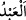

“Kölelerinizden ve câriyelerinizden elverişli olanları evlendirin”
el-Kevâşî’de der ki: “Yâni köle ve câriyelerden hayırlı ve mü’min olanları”.
el-Vasît’ta ise şöyle der: “Buradaki salâh/elverişli olmaktan maksad îmandır. el-
Müfredât’ta da şöyle der: “Salâh, fesâdın zıddıdır. Salâh ve fesâd, genellikle fiil ve
davranışlar için kullanılır. Sâlih olanlar özellikle zikredilmiştir. Çünkü bir köle işe
yarar olmayınca efendisi ona önem vermez, acımaz ve malını mülkünü harcayarak,
zorluklara katlanarak onun faydasına olacak şeyler yapmayı aklından bile geçirmez.
Bilakis onu yanında bile saklamayıp kovar.
Hür erkek ve kadınlarda salâh şartı aranmamıştır. Çünkü onların çoğu zâten salâh
ehlidir.
Fakir (Bursevî) der ki: Âyet-i kerîmede “__WORD__ ve “__WORD__ yerine “__WORD__ ve “__WORD__
kelimeleri kullanılmıştır. Halbuki Rasûlullah (s.a.): “Hiç kimse (eli altındakilere)
‘kölem, câriyem __WORD__ ’ demesin! Çünkü hepiniz Allah’ın kölelerisiniz. Bütün
kadınlarınız da Allah’ın kullarıdır. O zaman herkes, ‘yavrum, kızım, delikanlı!’
desin.”[156] buyurmuştur. Acaba âyet ile hadis arasında bir çelişki yok mudur? Cevap
şudur: Bu ancak bir kimse kendisini yüceltip kölesini tahkir etmek niyetiyle böyle derse
mekruh olur. Böylece âyet ile hadis arasında bir çelişkiye mahal kalmaz. Hamd Allah
Teâlâ’ya mahsustur.
“Eğer bunlar” bekârlar ile köle ve câriyelerinizden sâlih olanlar “fakir iseler,”
yoksul ve muhtaç iseler “Allah kendi lütfu ile onları zenginleştirir.” Yâni evlenecek
erkek ve kadının fakir olmaları, evliliğe mâni değildir. Çünkü Allah’ın lütfu maldan
müstağnîdir. Çünkü mal ve makam bazen gelir, bazen gider. Allah dilediği kimseyi
beklemediği bir yerden rızıklandırır. Bazıları demiştir ki: “Allah’a iftikârı düzgün
olanın Allah ile istiğnâsı düzgün olur.
“Allah, (lütfu) geniş olandır” zengindir, nimeti tükenmez bir genişliğin sâhibidir.
Çünkü O’nun kudretine nihâyet yoktur “ve (her şeyi) bilendir.” Hikmeti gereğince
dilediğine bol rızık verir, dilediğinin rızkını da kısar.
Mezheb imamları nikâhın/evlenmenin sünnet olduğunda ittifak etmişlerdir. Çünkü
Rasûlûllah (s.a.): “Benim fıtratımı, hâlimi yaşayışımı seven benim sünnetime uysun.
Nikâh da benim sünnetimdendir.”[157] buyurmuştur. Yine Rasûlullah (s.a.): “Gençler!
İçinizden gücü yetenler evlensin. Çünkü bu, gözü harama bakmaktan, ferci de harama
gitmekten korur. Evliliğe gücü yetmeyenler ise oruç tutsun. Çünkü oruç onun için
haramlardan koruyan bir sığınaktır.”[158] buyurmuştur.
Ebû Hanîfe ve Ahmed b. Hanbel’e göre cinsi münâsebete aşırı iştiyakı olup zinâ
etmekten korkan kimsenin evlenmesi vâcibdir. İmam Mâlîk ve Şâfiî ise evliliğe ihtiyaç
hissedip
gerekli
hazırlığı
bulunanların
evlenmelerinin
müstehab
olduğunu
söylemişlerdir. Cinsî münâsebete arzu duymayanlar için ise Ebû Hanîfe ve Ahmed b.
Hanbel’e göre evlilik nafile ibâdetten efdaldir. İmam Mâlîk ve İmam Şâfiî ise bunun
aksini söylemişlerdir. Şâfiî’ye göre eğer nâfile ibâdet yapmayacaksa evlilik daha